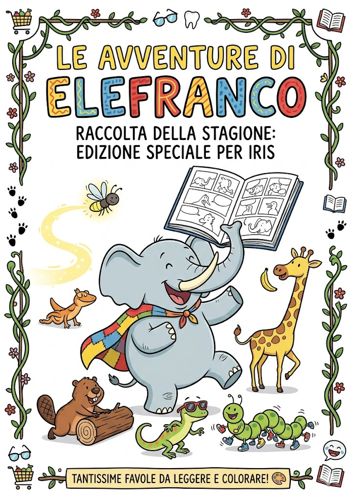
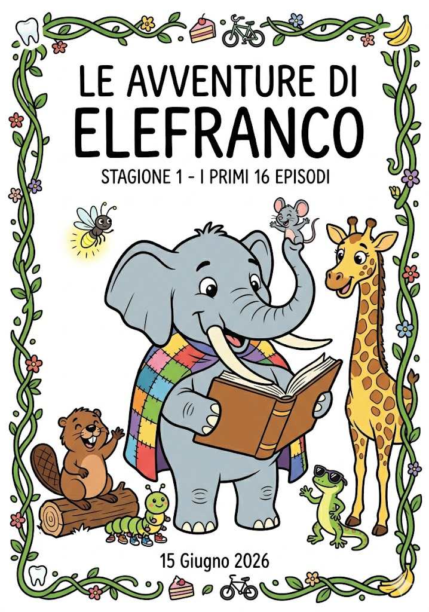
Iris Edition — Stagione 1
Per Iris, con tutto l'amore del mondo 🐘💛
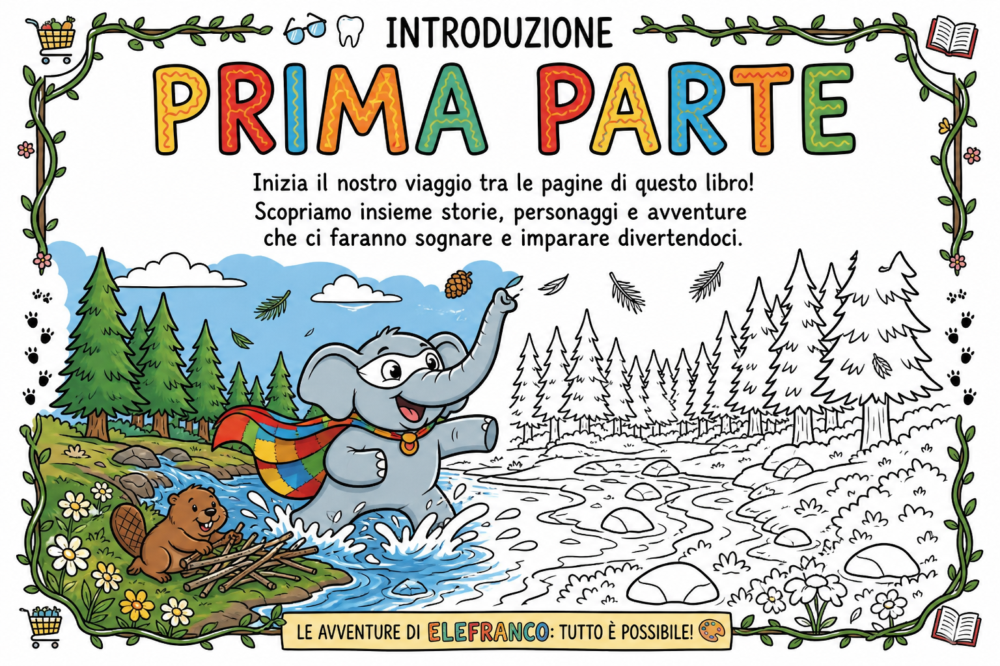
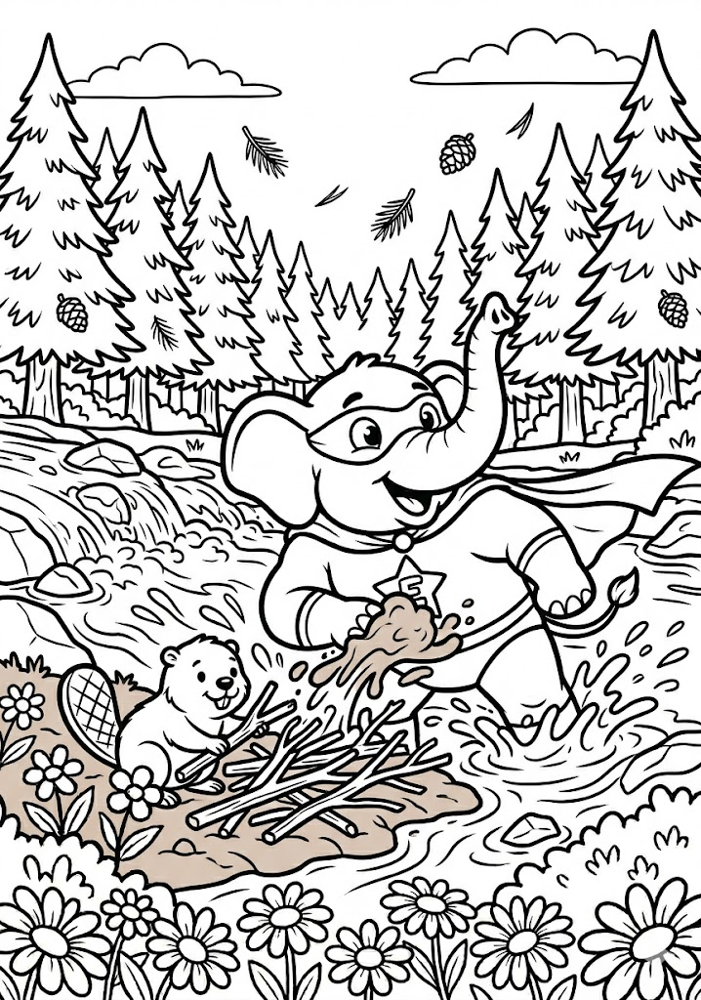
C'era una volta un Elefante di nome Franco, che gli amici chiamavano ... EleFranco. Di cognome faceva Franchini, un dettaglio molto importante per un cittadino così illustre! Abitava in una graziosa e accogliente casa alla periferia di un piccolo e tranquillo paesino circondato dal verde, chiamato FrancaVilla, un luogo incantevole dove i tetti delle case sembravano fatti di marzapane e i camini sbuffavano nuvole a forma di ciambella.
EleFranco era grande, grosso e immensamente generoso, con un simpatico ciuffetto di capelli neri sulla testa che si muoveva a ogni suo passo. Un mattino, il suo stomaco emise un brontolio pazzesco. Controllando la dispensa, si accorse che era vuota: doveva assolutamente andare al supermercato a comprare una torta regalo per la festa della sua cara amica Franca. Senza perdere tempo, si infilò i suoi stivali giganti di cuoio marrone, aprì la porta di casa e si mise in cammino verso il centro.
Mentre avanzava sulla strada sterrata, la terra tremava dolcemente: THUMP THUMP THUMP Arrivato vicino al ponticello sul fiume, notò una gran confusione. Il suo amico Fred il Castoro correva da una parte all'altra piangendo disperato: la sua splendida diga stava cedendo sotto i colpi di una corrente improvvisa e l'acqua rischiava di allagare non solo la sua tana, ma anche l'albero-casa degli scoiattoli. EleFranco si fermò a guardare. Cominciò a pensare a quanto fosse tardi, a quanti tipi di torte ci fossero al supermercato, se al cioccolato o alla panna, e a che tipo di candeline comprare.
Stava quasi per perdersi nei suoi pensieri quando Fred lanciò un urlo d'aiuto. Allora l'elefante scosse le grandi orecchie e disse ad alta voce la sua parola magica: "FOCUS!" In un attimo passò all'azione. Entrò nel fiume e usò le sue zampe massicce come uno scudo contro la corrente. Con la proboscide iniziò a scavare il fango argilloso dal fondo del fiume e a impastarlo sui rami della diga.
Si sporcò tantissimo, coprendosi di melma marrone dalla testa ai piedi. Ma la diga fue salvata! Purtroppo, però, EleFranco era troppo sporco per andare al supermercato e la festa stava per iniziare. Mentre si disperava, il sole caldo asciugò il fango sulla sua pelle.
Incredibilmente, l'argilla secca creò dei motivi geometrici bellissimi, che sembravano proprio la glassa decorativa di un dolce monumentale! In quel momento, gli scoiattoli felici sbucarono dai rami portando un vassoio dondolante con una gigantesca torta di noci appena sfornata. La missione era compiuta senza nemmeno entrare nel negozio! EleFranco alzò la proboscide al cielo e scoppiò nella sua famosa risata: OH... OH... OH...
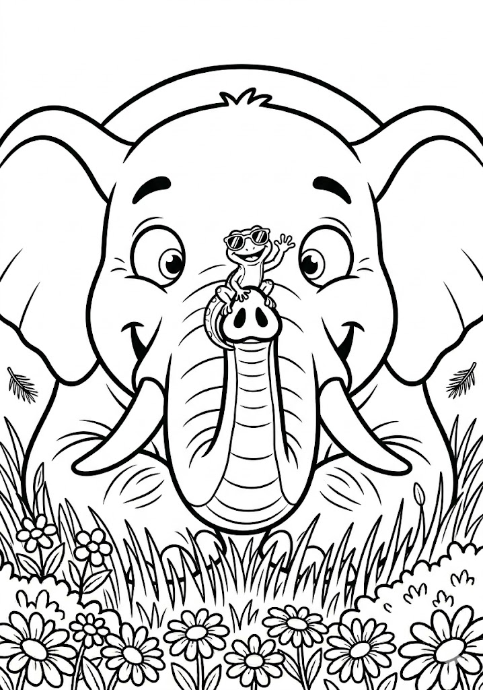
C'era una volta un Elefante di nome Franco, che gli amici chiamavano ... EleFranco. Di cognome faceva Franchini! Abitava nella sua bella casa nel paesino di FrancaVilla, un borgo magico abbarbicato sulla roccia dove i vialetti profumavano di menta selvatica e il vento di montagna suonava arpe invisibili tra le fronde degli alberi.
Quella mattina, però, il mondo intorno a lui sembrava fatto di nuvole sfocate. Gli alberi del giardino sembravano grandi macchie verdi e non riusciva nemmeno a distinguere il colore dei fiori. Deciso a risolvere il problema, capì che doveva andare allo studio del vecchio gufo oculista, situato dall'altra parte del centro abitato. Si infilò le sue scarpe giganti da passeggio con i lacci colorati e uscì di casa.
Camminava piano e con attenzione lungo il sentiero, producendo il suo tipico rumore: THUMP THUMP THUMP Mentre passava vicino a un muretto di pietra, sentì un flebile pianto provenire dall'erba alta. Si chinò e vide Jack il Geco, un piccolo rettile verdissimo che si disperava: un colpo di vento gli aveva fatto volare via i suoi minuscoli occhiali da sole scuri, indispensabili per non farsi accecare dal riflesso della roccia mentre cacciava le mosche. EleFranco si mise a guardare il prato verde, ma la sua vista annebbiata gli faceva vedere solo un'immensa distesa confusa. Iniziò a pensare a quanti tipi di lenti colorate esistessero e se l'oculista gli avrebbe fatto mettere degli occhiali giganti cerchiati di rosso.
Stava per perdersi in queste fantasie quando Jack singhiozzò più forte. Allora l'elefante scosse la testa e disse: "FOCUS!" Si inginocchiò e usò la proboscide come un potente aspirapolvere sul terreno, risucchiando l'aria delicatamente per non aspirare gli insetti. Per controllare cosa si impigliasse tra le pieghe della pelle, sforzò al massimo i muscoli degli occhi, restringendo e allargando le pupille per mettere a fuoco i dettagli più minuscoli dell'erba. All'improvviso, clack!
Il mondo tornò nitido: gli occhialini di Jack erano proprio sulla punta del suo nasone. Ma la vera sorpresa fu che quella ginnastica intensiva aveva riabilitato i suoi occhi! La vista sfuocata era sparita, la missione era compiuta e non serviva più l'oculista. Felice, EleFranco emise la sua risata: OH... OH... OH...
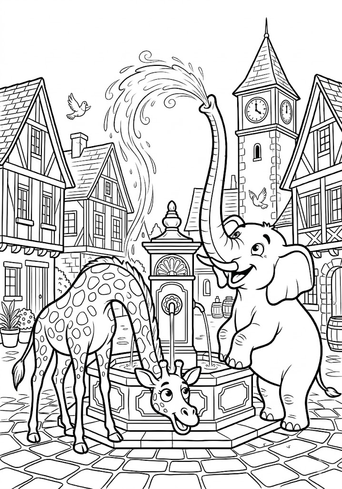
C'era una volta un Elefante di nome Franco, che gli amici chiamavano ... EleFranco. Di cognome faceva Franchini. Abitava nella sua accogliente casa all'interno del paesino di FrancaVilla, un paesino adagiato su dolci colline dorate dove i ruscelli scorrevano limpidi cantando ninfe della buonanotte e l'erba dei prati brillava alla luce del giorno come un immenso tappeto di smeraldi.
Era un pomeriggio caldo, di quelli che fanno venire una voglia matta di qualcosa di fresco. EleFranco si trovava in cucina, intento a frugare nella sua grande cesta della frutta, ma trovò solo qualche guscio di nocciolina vuoto. «Accidenti!» esclamò, mentre il suo stomaco lanciava un grande brontolio. «Il mio regno per un casco di banane!
Gialle, mature e profumate... ecco cosa mi serve.» Si infilò i suoi stivali giganti e si diresse verso il centro. La sua meta era la bottega del fruttivendolo Pino. Mentre camminava, la via principale risuonava: THUMP THUMP THUMP Vicino alla piazza principale, EleFranco vide qualcosa di molto strano.
C’erano due zampe lunghissime che finivano in un corpo maculato, ma il collo era completamente piegato a metà, come un ombrello dimenticato sotto la pioggia. EleFranco incontrò gli occhi tristi di Raffa la Giraffa: aveva un torcicollo terribile e non riusciva a piegarsi per bere alla fontanella comunale, morendo di sete. EleFranco iniziò a guardare le vetrine e a pensare a quante banane avrebbe mangiato, dimenticandosi per un attimo della giraffa. Si stava distraendo, ma vedendo Raffa piangere, scosse le grandi orecchie e gridò: "FOCUS!" Corse alla fontanella.
Aspirò l'acqua con la proboscide e, tenendola in bocca per un istante, la intiepidì per non fare del male ai muscoli di Raffa. Poi, spruzzò un perfetto idromassaggio termico sul collo dell'amica, massaggiando finché non sentì un piccolo "pop" muscolare. Il collo di Raffa tornò dritto e fiero. EleFranco era affamatissimo, ma vederla felice lo riempiva di gioia.
Per ringraziarlo, Raffa tese il suo lungo collo verso la cima di una palma altissima di FrancaVilla, staccando un casco di banane dorate e dolcissime. Le depositò ai suoi piedi: la merenda era servita! EleFranco si sedette felice e lanciò la sua risata: OH... OH... OH...
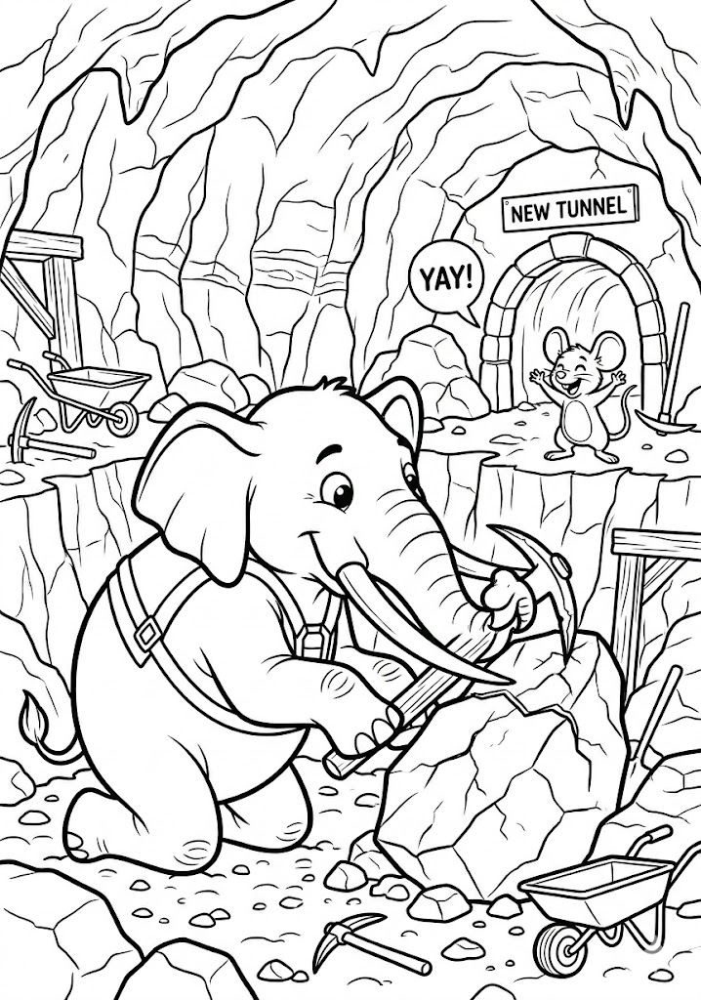
C'era una volta un Elefante di nome Franco, che gli amici chiamavano ... EleFranco. Di cognome faceva Franchini. Abitava nella sua casa a FrancaVilla, un piccolo borgo radioso incorniciato da una fitta foresta tropicale, dove le farfalle volavano ricamando fili di seta colorata e l'aria profumava di gelsomino ed estate perenne.
Era un pomeriggio caldissimo e EleFranco sentiva una sensazione ruvida alla zanna sinistra, come se ci fosse del tartaro o della sabbia incastrata. Deciso a farsi fare una bella pulizia, si preparò per andare dallo studio del dentista degli elefanti. Si infilò i suoi stivali giganti ben spazzolati, aprì la porta e si mise in marcia a grandi passi. Il terreno della via risuonava: THUMP THUMP THUMP Lungo la via, vicino alla radice di un albero secolare, vide Pino il Topolino, stanco e sudato.
Pino cercava di scavare la sua nuova tana sotterranea prima dell'inverno, ma il terreno era pieno di sassi durissimi che gli rompono le unghie. EleFranco guardò l'orologio e iniziò a pensare a quante poltrone grandi ci fossero nello studio medico e a che sapore avesse il collutorio del dottore. Si stava perdendo nei suoi pensieri, ma vedendo lo sguardo disperato del topolino, scosse le grandi orecchie e gridò: "FOCUS!" Si inclinò di lato e usò la sua zanna sinistra come un potente piccone contro la roccia dura. Scavò con energia pazzesca, sollevando scintille e polvere.
Lo sfregamento continuo contro la sabbia abrasiva generò un forte calore, ma alla fine la splendida tana per Pino era pronta. EleFranco temeva di aver rovinato la zanna, ma Pino gli gridò di specchiarsi nel fiume vicino: lo scavo vigoroso aveva rimosso ogni traccia di tartaro, lucidando la zanna sinistra fino a farla splendere come oro massiccio! Era pulitissima, senza alcun bisogno del dentista. EleFranco alzò la proboscide e promise la sua risata: OH... OH... OH... Seconda Parte: Intoppi e Soluzioni 🛠
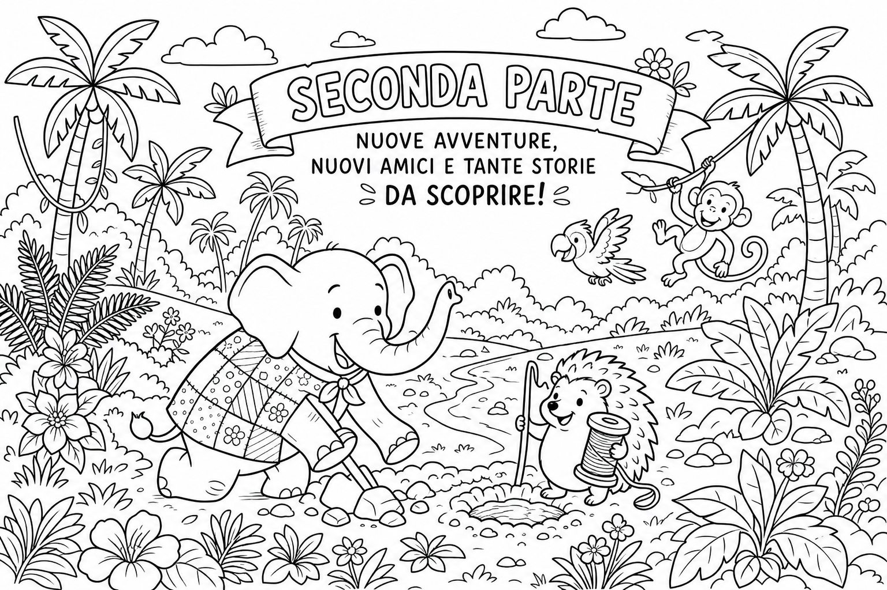
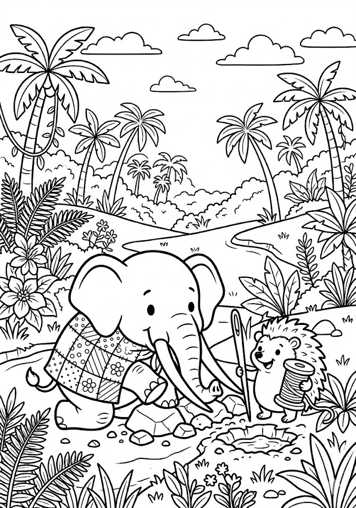
C'era una volta un Elefante di nome Franco, che gli amici chiamavano ... EleFranco. Di cognome faceva Franchini. Abitava nella sua accogliente casa a FrancaVilla, un villaggio pittoresco dove le strade erano lastricate di ciottoli bianchi e le botteghe degli artigiani si susseguivano una dopo l'altra come scatole di giocattoli colorate.
Un giorno notò un brutto strappo sulla sua giacca di velluto preferita: «Devo andare subito dal sarto del paesino per farla rammendare.» Si infilò le sue scarpe giganti con la suola di gomma, prese la giacca sotto il braccio e uscì di casa. I suoi passi risuonavano pesanti sul terreno: THUMP THUMP THUMP Mentre passava vicino a una siepe selvatica, udì dei piccoli lamenti acuti: è Ciccio il Riccio, completamente intrappolato in un cespuglio di rovi pieni di spine. EleFranco guardò la giacca strappata e iniziò a pensare a quali fili colorati avrebbe usato il sarto e a quanti bottoni nuovi aggiungere.
Si stava perdendo in questi pensieri, ma vedendo Ciccio soffrire, scosse le orecchie e gridò: "FOCUS!" Prese la sua amata giacca e la stese sopra i rovi acuminati, creando una passerella protettiva. Grazie a questo scudo, Ciccio riuscì a scivolare fuori sano e salvo. Purtroppo, però, la giacca fu ridotta in mille stracci dalle spine. Mentre si disperava, Ciccio raccolse i pezzi colorati e, usando i suoi aculei come perfetti aghi da cucito, creò una splendida mantella stile "patchwork" coloratissima per l'elefante.
EleFranco se la indossò fiero, sentendosi un vero supereroe di FrancaVilla. La missione era compiuta! EleFranco alzò la proboscide e promise la sua risata: OH... OH... OH...
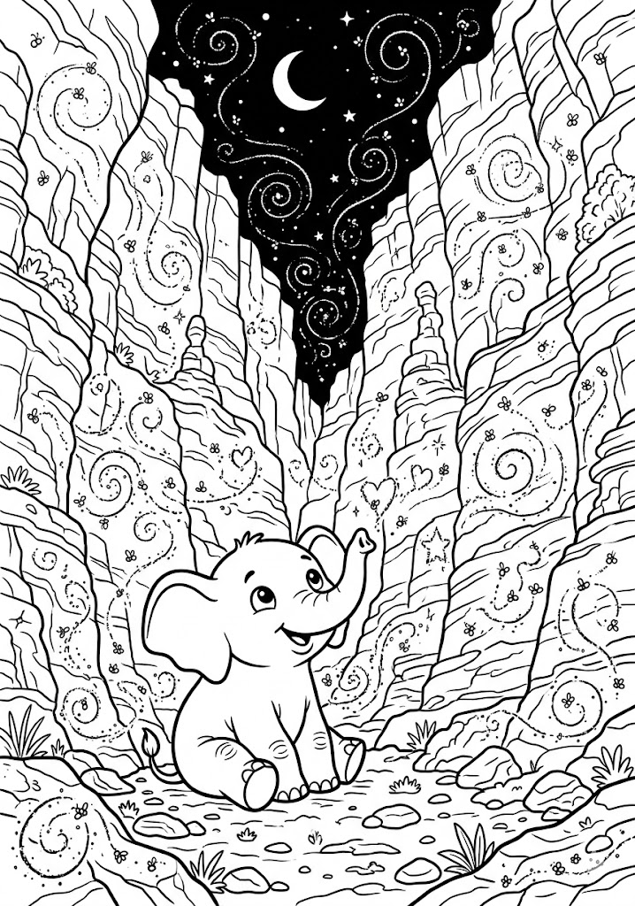
C'era una volta un Elefante di nome Franco, che gli amici chiamavano ... EleFranco. Di cognome faceva Franchini! Abitava nella sua casa a FrancaVilla, un paesino misterioso e affascinante che di notte si illuminava solo grazie ai riflessi d'argento del fiume e alle lanterne di carta appese ai balconi.
Desiderava tanto un nuovo libro di favole per la buonanotte: «Andrò alla libreria di FrancaVilla prima che chiuda.» Si infilò le sue ciabatte giganti di lana morbida ed uscì di casa. I suoi passi facevano tremare dolcemente le foglie cadute sul sentiero: THUMP THUMP THUMP Nel bosco vicino alle case incontra Luce la Lucciola, che piangeva triste perché una brutta febbre le aveva spento la luce sul guscio, lasciandola smarrita nel buio. EleFranco guardò le stelle e iniziò a pensare a quante pagine avesse il libro che voleva comprare e se ci fossero disegni di draghi o navi.
Si stava distraendo, ma sentendo lo starnuto della lucciola, scosse le grandi orecchie e gridò: "FOCUS!" Fece salire la piccola Luce sulla sua testa e iniziò a inventare ad alta voce storie meravigliose di giganti buoni e stelle cadenti per non farle avere paura del buio. Arrivati al grande albero delle lucciole, tutta la famiglia di Luce volò in cerchio intorno a EleFranco proiettando sulle rocce le ombre animate dei suoi racconti, creando un magico libro illustrato vivente nel cielo. La favola c'era già, senza bisogno di comprare nulla. Felice, l'elefante tornò a casa dopo aver fatto la sua risata: OH... OH... OH...
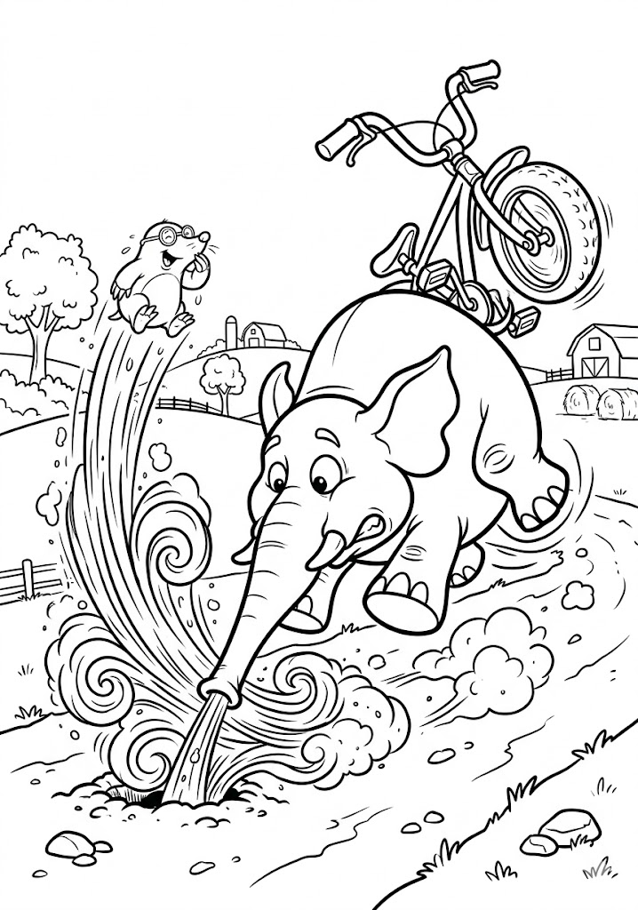
C'era una volta un Elefante di nome Franco, che gli amici chiamavano ... EleFranco. Di cognome faceva Franchini. Abitava a FrancaVilla, un villaggio industriale tutto mattoni rossi e canali artificiali, dove gli artigiani amavano riparare ingranaggi e il ticchettio degli orologi pubblici scandiva il tempo della comunità.
Scoprì che le ruote della sua bici gigante erano piatte: «Devo spingere la bici fino all'officina del meccanico in paese.» Si infilò i suoi robusti stivali giganti da lavoro e si incamminò. Spingendo quel peso, i suoi passi erano decisi: THUMP THUMP THUMP Vicino a una collinetta, notò del fumo grigio uscire dal terreno: era Ralph la Talpa che tossisce perché scavando aveva intercettato un deposito sotterraneo di foglie secche che bruciava lentamente. EleFranco guardò le ruote a terra e iniziò a pensare a quanti bar di pressione servissero per gonfiarle e se il meccanico avesse una pompa elettrica.
Si stava distraendo, ma la tosse di Ralph lo ridestò. Scosse le orecchie e gridò: "FOCUS!" Si posizionò sopra il foro d'aerazione della galleria e soffiò con tutta la forza dei suoi polmoni. Il super soffio liberò la galleria salvando la talpa, ma l'aria compressa, rimbalzando nel tunnel, trovò un soffione naturale che sbucava proprio sotto le valvole aperte della bicicletta, gonfiandole le ruote al massimo in un secondo! Tutto si era risolto da solo senza bisogno del meccanico.
EleFranco partì felice sulla sua bici facendo la sua risata: OH... OH... OH...
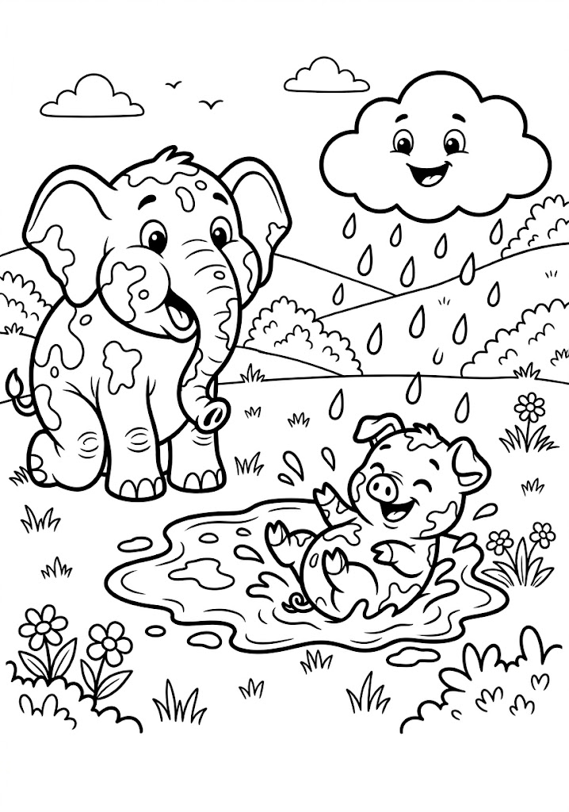
C'era una volta un Elefante di nome Franco, che gli amici chiamavano ... EleFranco. Di cognome faceva Franchini. Abitava nella sua casa a FrancaVilla, un paesino rurale adagiato in una piana di canneti e campi di girasole, dove i trattori colorati raccoglievano il grano e i canali d'acqua disegnavano linee geometriche perfette sulla terra.
Era tutto coperto di polvere grigia dopo i lavori in giardino: «Ho proprio bisogno di andare al Lavaggio Elefanti del paesino per fare una doccia al profumo di fragola.» Si infilò i suoi stivali giganti di gomma azzurra ed uscì di casa. Ad ogni passo, gli stivali facevano un suono sordo sulla strada: THUMP THUMP THUMP Passando vicino alla fattoria, vide Mino il Maialino triste: il sole aveva prosciugato la sua pozzanghera e rischiava di scottarsi la pelle delicata. EleFranco pensò a quanti getti d'acqua avesse il lavaggio automatico e se le spazzole gli avrebbero fatto il solletico.
Si stava distraendo, ma un piccolo lamento di Mino lo riportò alla realtà. Scosse le grandi orecchie e gridò: "FOCUS!" Corse al fiume, riempì la proboscide d'acqua e la spruzzò sulla terra ricreando il fango fresco per l'amico. Mino saltò felice facendo un mega spruzzo che investì in pieno EleFranco, infangandolo tutto di nuovo! Proprio in quel momento scoppiò un acquazzone estivo bellissimo che lavò perfettamente l'elefante, lasciandolo pulito e rinfrescato, mentre manteneva bagnata la tana di Mino.
La missione era compiuta grazie alla natura! EleFranco alzò la proboscide e promise la sua risata: OH... OH... OH... Terza Parte: Nuove Avventure 🌟
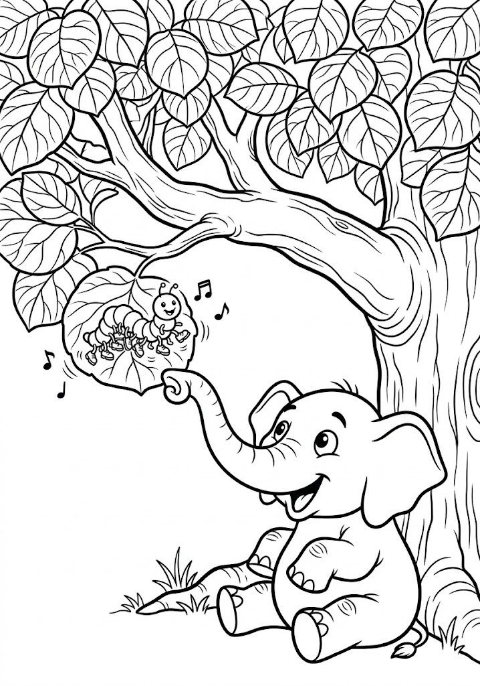
C'era una volta un Elefante di nome Franco, che gli amici chiamavano ... EleFranco. Di cognome faceva Franchini. Abitava a FrancaVilla, un paesino montano circondato da cime innevate e boschi di pini secolari, dove le case avevano grandi tetti spioventi di legno e i camini odoravano costantemente di legna di castagno.
Quella mattina doveva andare dal calzolaio a ritirare i suoi stivali invernali giganti. Si infilò i suoi stivali leggeri ed uscì di casa. Il rumore dei suoi passi cadenzava la marcia sul selciato: THUMP THUMP THUMP Lungo la via di FrancaVilla, seduto su una foglia, c'era Bruno il Bruco triste: doveva andare al grande Ballo della Primavera del paesino, ma aveva aggrovigliato i lacci delle sue 42 scarpine colorate in un unico enorme nodo. EleFranco guardò il sentiero e pensò a quanto fossero spesse le suole dei suoi nuovi stivali invernali e al profumo del cuoio nuovo del calzolaio.
Si stava distraendo, ma il singhiozzo di Bruno lo richiamò all'ordine. Scosse le orecchie e disse: "FOCUS!" Si chinò e, usando la punta ultra-sensibile della proboscide, sciolse i nodi uno ad uno con pazienza infinita. Lo sforzo di precisione gli causò un forte crampo e la proboscide si arrotolò come una molla d'acciaio! Bruno allora chiamò i suoi fratelli bruchi e tutti insieme fecero un massaggio a passo di danza sulla proboscide: i loro piccoli colpetti curano il crampo e rilassano così tanto i piedi dell'elefante che si sentì caldissimo, come se indossasse già le migliori scarpe del mondo.
Non servivano più gli stivali nuovi! EleFranco alzò la proboscide e promise la sua risata: OH... OH... OH...
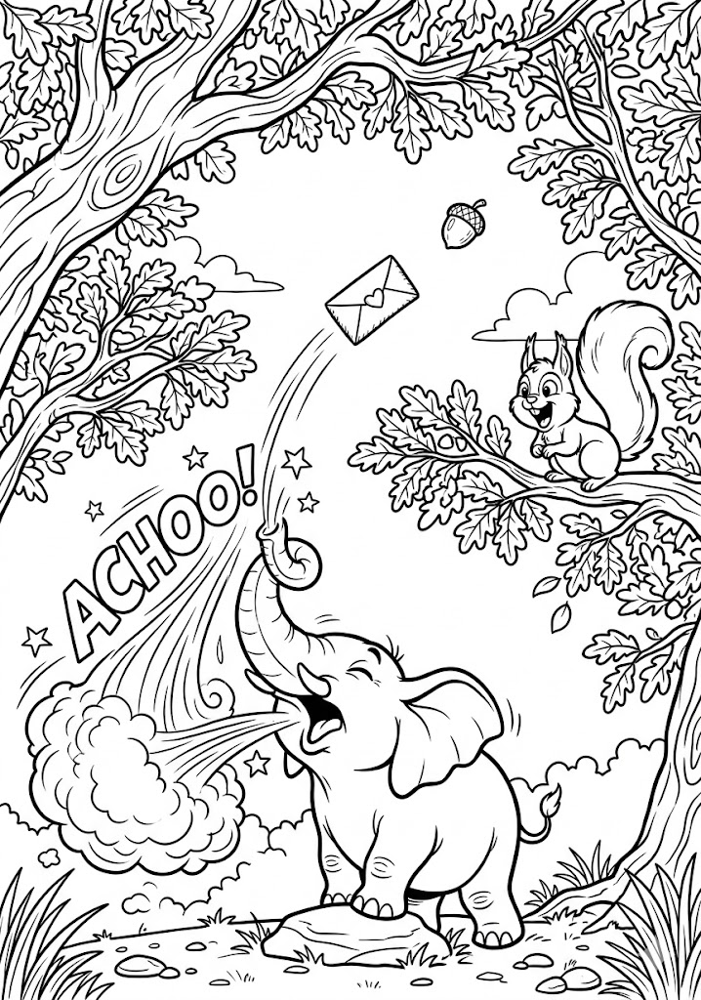
C'era una volta un Elefante di nome Franco, che gli amici chiamavano ... EleFranco. Di cognome faceva Franchini. Abitava nella sua casa a FrancaVilla, un paesino costiero battuto da una dolce brezza marina, dove i vicoli profumavano di salsedine e le barche da pesca riposavano sul bagnasciuga dorato.
Aveva scritto una bellissima lettera per il suo cuginetto lontano: «Devo andare subito all'ufficio postale prima che passi il postino.» Si infilò i suoi stivali giganti rossi, aprì la porta e si diresse verso la piazza. Il terreno risuonava sotto il seu peso massiccio: THUMP THUMP THUMP Sotto la grande quercia secolare incontra Renatolo lo Scoiattolo disperato: aveva fatto cadere tutte le sue scorte di ghiande invernali in una fessura strettissimo e profonda tra le radici dell'albero e non riusciva a raggiungerle. EleFranco guardò il buco e pensò a quanti francobolli servissero per una spedizione internazionale e a che faccia avrebbe fatto il cuginetto.
Si stava distraendo, ma il pianto di Renatolo lo scosse. Allora aprì le orecchie e disse: "FOCUS!" Infilò la proboscide nella fessura usandola come una cannuccia per aspirare le ghiande e rimetterle nel cesto. Ne aspirò una di troppo che gli rimase incastrata nel naso, provocandogli un solletico pazzesco! Caricato tutto il fiato, fece un ultimo starnuto stratosferico: YAAATCIÙÙÙ!
Il soffio potente sparò via la ghianda insieme alla lettera che aveva in tasca, la quale planò nel cielo andandosi a infilare precisamente dentro il sacco del postino tre vie più in là! Lettera spedita in modo super-veloce. EleFranco alzò la proboscide e promise la sua risata: OH... OH... OH...
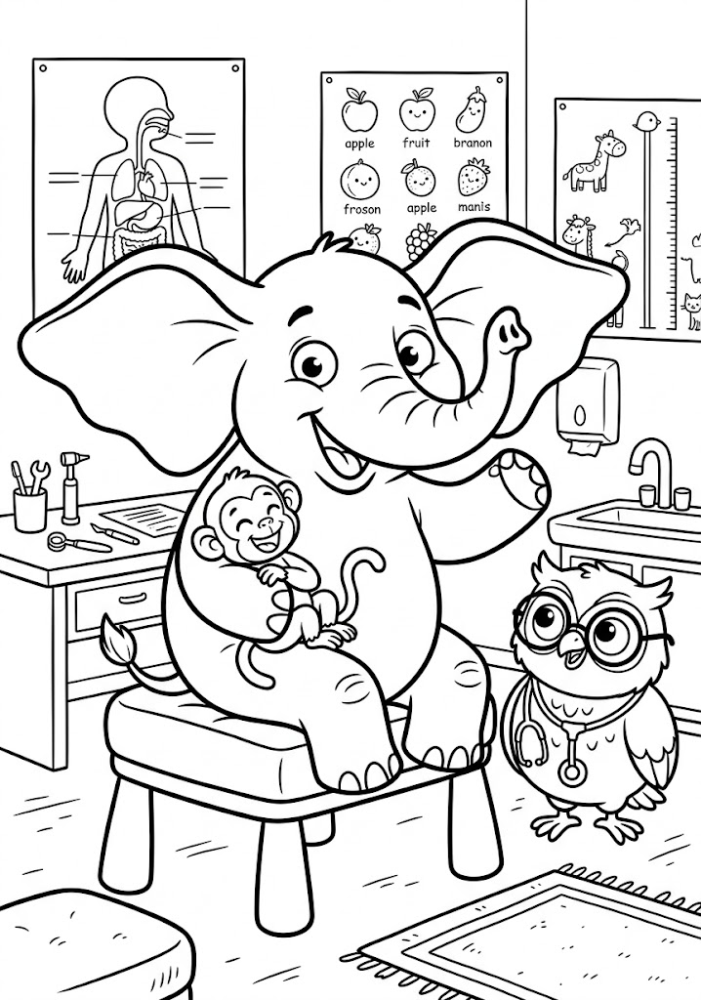
C'era una volta un Elefante di nome Franco, che gli amici chiamavano ... EleFranco. Di cognome faceva Franchini. Abitava nella sua casa a FrancaVilla, un paesino antico caratterizzato da alti campanili di pietra e cortili nascosti, dove le fontane medievali zampillavano acqua fresca e gli anziani sedevano all'ombra parlando del tempo.
Era il giorno della sua visita medica annuale: «Andrò subito a farmi controllare il cuore.» Si infilò i suoi stivali giganti da passeggio ed uscì di casa. Ad ogni suo passo pesante, la strada produceva un suono ritmico: THUMP THUMP THUMP In ospedale vide la piccola Mietta la Scimmietta aggrappata alla sedia, che urlava terrorizzata perché l'infermiera stringeva in mano una siringa per farle una puntura protettiva. EleFranco si ferma e pensò a quanto fosse grande lo stetoscopio del medico e a quanti battiti facesse il suo cuore.
Si stava distraendo, ma un urlo di Mietta lo risvegliò. Scosse le orecchie e si disse: "FOCUS!" Prese Mietta tra le braccia e iniziò a muovere le orecchie a sventola imitando in modo buffissimo i versi di tutti gli animali: il leone con la voce da papera e il fischio del treno. Mietta ridette così tanto che l'infermiera le fece la puntura in un secondo senza che avvertisse nulla. Il primario, vedendo l'elefante ridere, gli appoggiò lo stetoscopio sul petto e disse: «Un cuore così felice è il più sano di tutta FrancaVilla!
Visita superata!». Tutto era andato benissimo, EleFranco alzò la proboscide e promise la sua risata: OH... OH... OH...
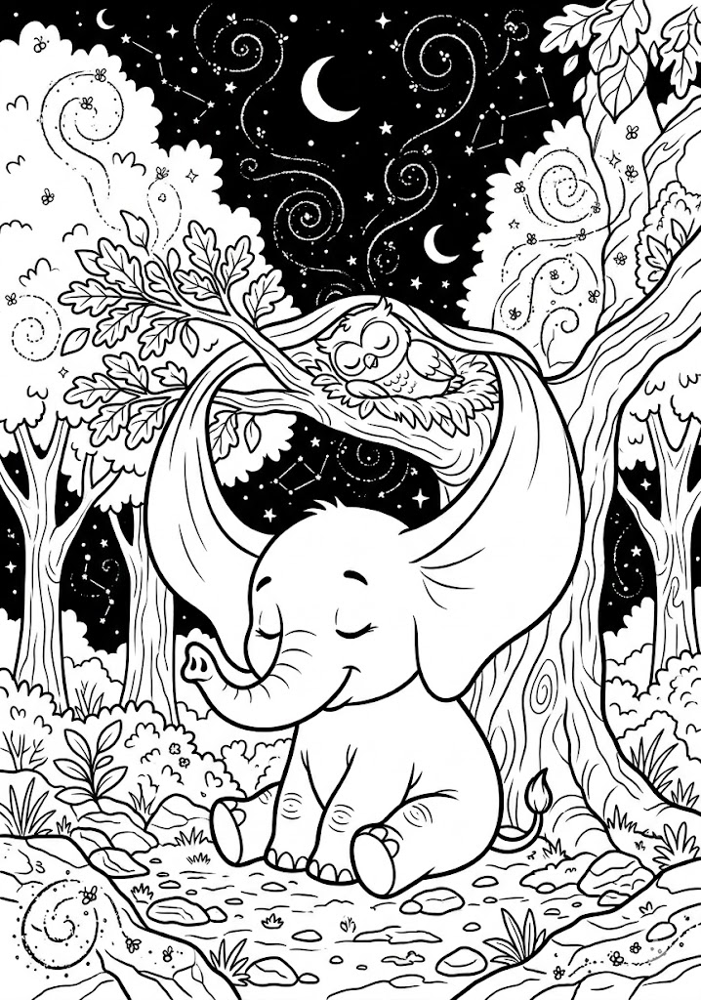
C'era una volta un Elefante di nome Franco, che gli amici chiamavano ... EleFranco. Di cognome faceva Franchini. Abitava nella sua accogliente casa all'interno del paesino di FrancaVilla, una borgata magica coperta da tetti di tegole azzurre dove i giardini pensili traboccavano di rose bianche e i muri delle case erano dipinti con bellissimi affreschi di storie antiche.
La lampadina del suo salotto si era fulminata: «Devo andare subito alla ferramenta a comprarne una nuova.» Si infilò i suoi stivali giganti da passeggio, aprì la porta e si diresse verso il negozio. Camminava sul marciapiede con il suo passo pesante: THUMP THUMP THUMP Sotto un grande albero della piazza incontra Tufo il Gufo con delle enorme occhiaie scure: doveva dormire di giorno, ma un gruppo di uccellini dispettosi cantava a squarciagola, impedendogli di chiudere occhio. EleFranco si fermò e pensò a quanti watt servissero per il salotto e a quanto fosse difficile montarla sul soffitto alto.
Si stava perdendo in questi pensieri, ma vedendo le ali di Tufo tremare, si concentrò, scosse le orecchie e gridò: "FOCUS!" Si sedette ai piedi del tronco e allargò le orecchie a sventola intorno al ramo di Tufo, creando un perfetto isolamento acustico. Il gufo si addormentò felice, e al buio si addormentò profondamente pure l'elefante per due ore. Quando si svegliò, il riposo aveva rigenerato i suoi occhi, che brillavano illuminando la via; arrivato a casa si accorse che il sole illuminava perfettamente il salotto e che non servivano luci artificiali. La missione era compiuta grazie all'altruismo!
EleFranco inserì la proboscide all'insù e fece la sua risata: OH... OH... OH... Quarta Parte: Gran Finale di Stagione 🎭
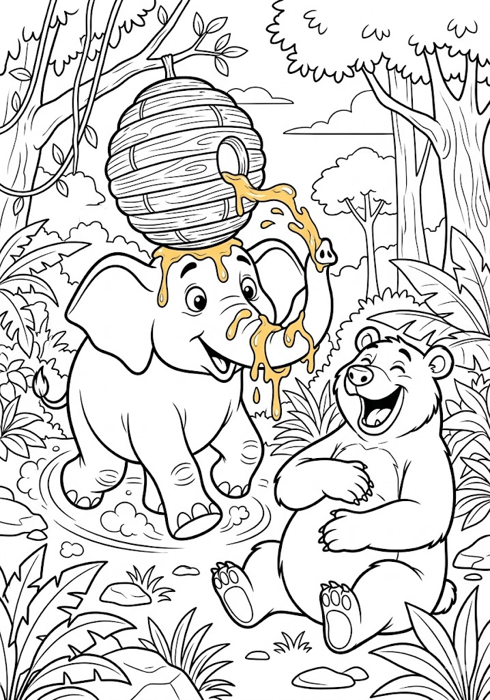
C'era una volta un Elefante di nome Franco, che gli amici chiamavano ... EleFranco. Di cognome faceva Franchini. Abitava nella sua accogliente casa a FrancaVilla, un paesino nordico incastrato in una vallata di abeti rossi e laghi ghiacciati, dove l'aria frizzante pungeva le guance e le case avevano caldi pavimenti di pietra riscaldati dal fuoco.
Voleva qualcosa di dolce: «Andrò alla pasticceria a comprare un sacchetto di biscotti allo zenzero freschi.» Si infilò i suoi stivali giganti di cuoio morbido ed uscì di casa. I suoi passi risuonavano sulla via: THUMP THUMP THUMP Vicino a un albero cavo incontra Fosco l'Orso che si agitava con la testa completamente infilata e incastrata all'interno di un grande alveare appeso a un ramo: voleva solo leccare del miele ma era rimasto intrappolato. EleFranco guardò la pasticceria e pensò a quanti biscotti ci fossero nel sacchetto e se fossero a forma di omino.
Si stava distraendo, ma un lamento soffocato di Fosco lo riportò al presente. Scosse le orecchie e gridò: "FOCUS!" Afferrò l'alveare con la proboscide e tirò con forza. Con un sonoro SBLOCK! la testa dell'orso uscì, ma per il contraccolpo l'alveare rimbalzò spiaccicandosi sulla testa di EleFranco, coprendogli il ciuffo di miele appiccicoso! Proprio allora il vento sollevò una pioggia dorata di polline dai fiori che si attaccò sopra al miele, asciugandosi al sole e trasformandosi in biscotti croccanti e deliziosi sul suo ciuffo!
La missione era compiuta gratis e i due amici mangiarono felici. EleFranco alzò la proboscide e promise la sua risata: OH... OH... OH...
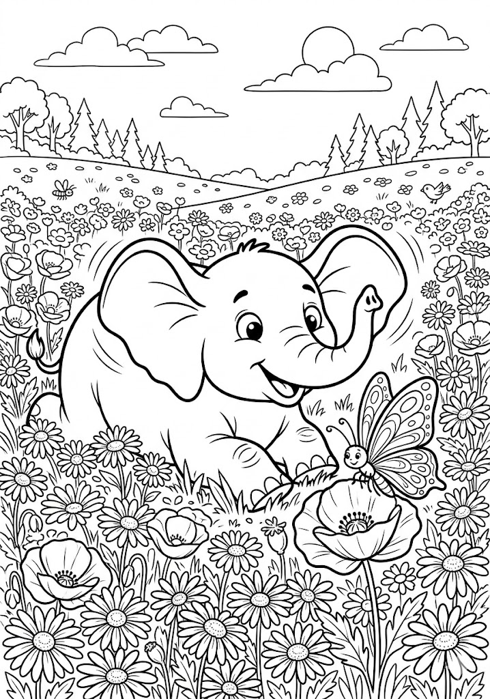
C'era una volta un Elefante di nome Franco, che gli amici chiamavano ... EleFranco. Di cognome faceva Franchini. Abitava nella sua casa a FrancaVilla, un borgo fiorito sospeso su colline di ulivi e vigne secolari, dove le case avevano facciate color pastello e l'aria profumava di terra bagnata e mosto selvatico.
Voleva abbellire il suo prato: «Andrò al vivaio a comprare dei semi di margherite colorate.» Si infilò i suoi stivali giganti ed uscì di casa. I suoi passi scandivano il tempo: THUMP THUMP THUMP Vicino a un cespuglio incontra Lalla la Farfalla con l'ala bagnata da una goccia di rugiada gigante, incapace di volare per sfuggire a un gatto curioso che si avvicinava quatto quatto. EleFranco guardò la strada e pensò a quanti fiori sarebbero cresciuti nel suo giardino e a quanta acqua usare per annaffiarli.
Si stava distraendo, ma il miagolio del gatto lo ridestò. Scosse le grandi orecchie e disse: "FOCUS!" Si posizionò davanti alla farfalla e mosse le orecchie come ventagli, creando una brezza calda che asciugò l'ala di Lalla, che volò via felice. Lo sventolio vigoroso però sollevò un immenso cumulo di foglie secche dal sentiero, seppellendo interamente EleFranco! Camminando stanco verso casa, i semi selvatici nascosti sotto le foglie si erano impigliati nei peli delle sue zampe, cadendo nel terreno ad ogni passo.
Poche settimane dopo tutto il sentiero fiorì da solo in modo meraviglioso! EleFranco guardò lo spettacolo e promise la sua risata: OH... OH... OH...
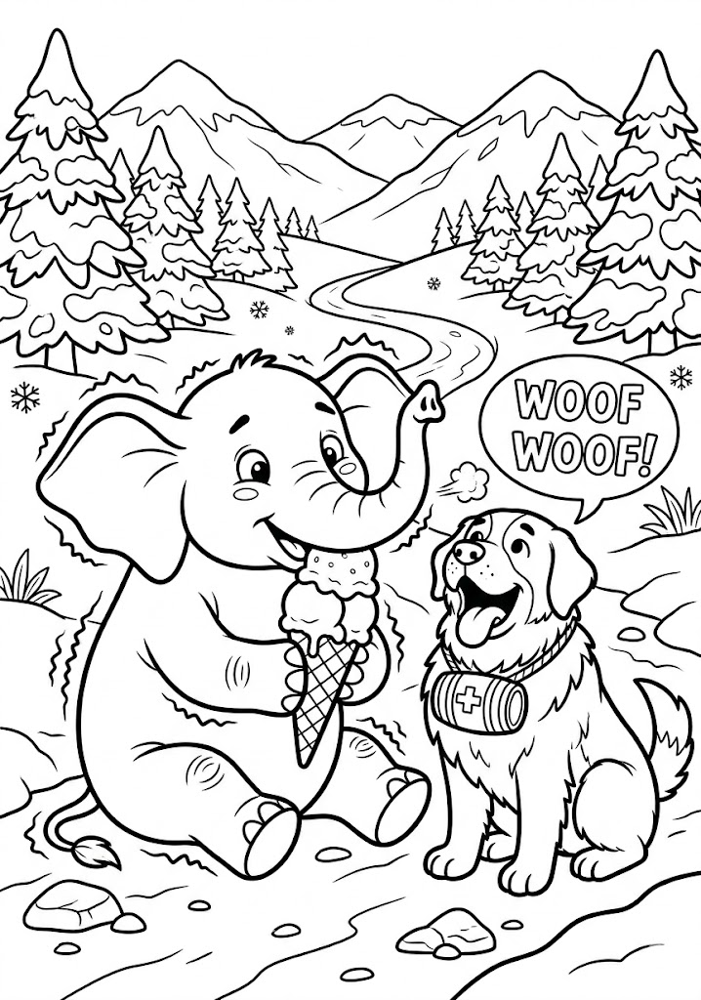
C'era una volta un Elefante di nome Franco, che gli amici chiamavano ... EleFranco. Di cognome faceva Franchini. Abitava a FrancaVilla, un paesino vulcanico sorto vicino a sorgenti termali calde, dove il terreno fumava dolcemente emanando vapori benefici e le rocce scure creavano un contrasto stupendo con l'acqua turchese dei laghetti.
Voleva qualcosa di fresco: «Ho bisogno di un cono gelato al pistacchio!» Si infilò i suoi stivali giganti estivi ed uscì di casa. Il terreno risuonava sotto i suoi piedi caldi: THUMP THUMP THUMP Presso una collinetta di sassi arroventati incontra Mayer la Cagnolina, un dolce meticcio dorato da salvataggio sfinita dall'afa, che aveva perso la sua borraccia sulla cima instabile della roccia. EleFranco guardò la gelateria nella piazza e pensò a quante palline prendere e se aggiungere la panna montata.
Si stava perdendo in queste dolci fantasie, ma vedendo Mayer ansimare preoccupata, scosse le orecchie e gridò: "FOCUS!" Recuperò la borraccia con la proboscide, poi inserì il nasone nell'ombra del bosco vicino, aspirò quel flusso d'aria fredda e la soffiò su Mayer rinfrescandola subito. Lo sbalzo termico però fece venire un brivido freddo lungo la schiena all'elefante e la proboscide rimase congelata! Per ringraziarlo, Mayer versò del latte di cocco e frutti di bosco sulla pelle fredda della proboscide, e il liquido si solidificò all'istante diventando un gelato cremosissimo su stecco! La merenda era fatta gratis e con amore, l'elefante alzò la proboscide e promise la sua risata: OH... OH... OH...
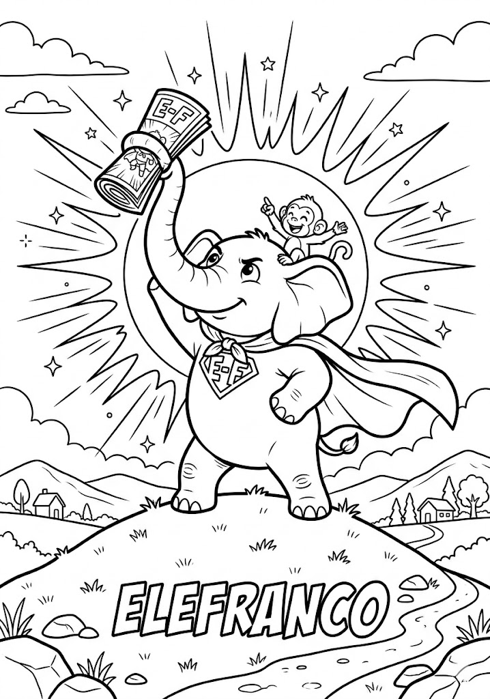
C'era una volta un Elefante di nome Franco, che gli amici chiamavano ... EleFranco. Di cognome faceva Franchini. Abitava nella sua casa a FrancaVilla, una cittadina fluviale costruita su palafitte e ponti di corda intrecciata, dove l'acqua scorreva placida sotto i pavimenti di legno e le barche colorate fungevano da bizzarri taxi per gli abitanti.
Era uscito il fumetto di "Super-Elefante": «Devo andare subito all'edicola prima che finiscano le copie!» Si infilò i suoi stivali giganti lucidi ed uscì. Il terreno della strada vibrava ritmicamente: THUMP THUMP THUMP Presso un albero del parco incontra Betta la Scimmietta tutta tremante, perché un soffio di vento le aveva fatto volare la sua amata sciarpa rossa su un ramo altissimo fuori dalla sua portata. EleFranco guardò l'edicola e pensò a quali superpoteri avrebbe usato il personaggio nel fumetto e a quanto fossero colorate le vignette.
Si stava distraendo, ma vedendo Betta soffrire il freddo, scosse le orecchie e gridò: "FOCUS!" Si alzò sulle zampe posteriori, allungando la proboscide verso l'alto con tutte le forze per raggiungere la sciarpa. La schiena fece un rumore pazzesco ( STRECH! ) e rimase bloccato dal dolore, ma rimesse la sciarpa a Betta. La scimmietta felice vide un vecchio foglio colorato incastrato tra le foglie e lo lanciò giù: era proprio la rarissima pagina centrale inedita del fumetto volata via dall'edicola il giorno prima per il vento! Il fumetto era completo, EleFranco si sbloccò dalla gioia, alzò la proboscide e lanciò la sua risata: OH... OH... OH...
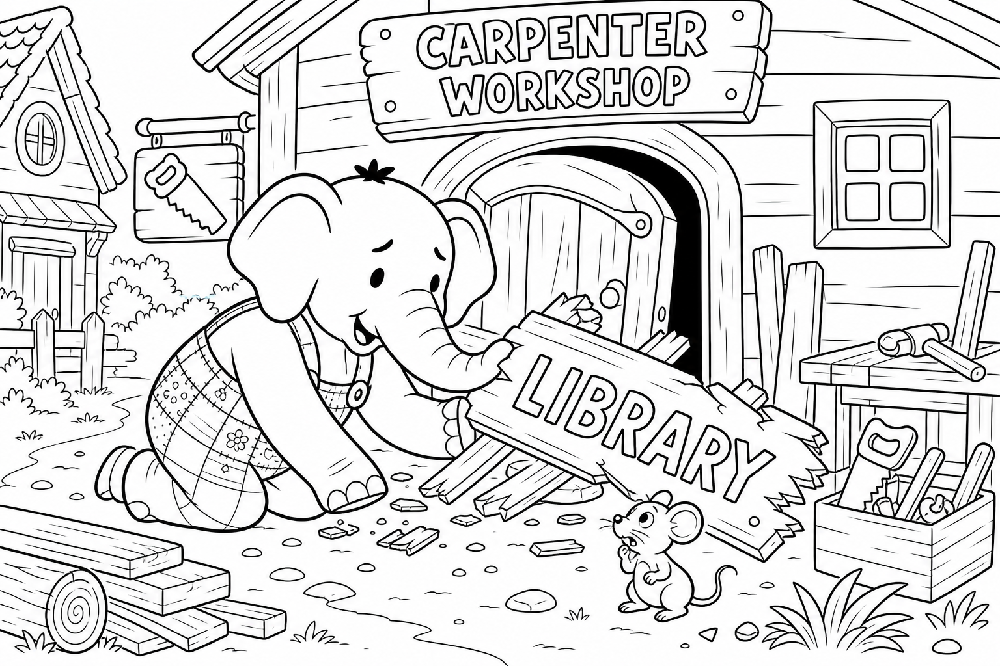
C'era una volta un Elefante di nome Franco, che gli amici chiamavano ... EleFranco. Di cognome faceva Franchini. Abitava nella sua accogliente casa all'interno del paesino di FrancaVilla.
Un mattino, mentre faceva colazione, si sedette sulla sua sedia di legno preferita e... crack! Quasi cadde all'indietro: una delle zampe posteriori era diventata cortissima e dondolava paurosamente. «Accidenti!» esclamò EleFranco. «Devo andare subito alla falegnameria di FrancaVilla per farla sistemare.»
Si infilò i suoi stivali giganti di cuoio scuro, prese la sedia sotto il braccio e uscì di casa camminando con passo deciso. Sulla strada sterrata si sentiva il solito ritmo: THUMP THUMP THUMP Davanti alla biblioteca incontra Lendo il Topo Tremendo in lacrime: aveva rosicchiato i sostegni dell'insegna di legno della biblioteca per fare uno scherzo, facendola crollare e sbarrando la porta principale. EleFranco guardò la sua sedia dondolante e pensò a che tipo di colla avrebbe usato il falegname e se alla resina di pino. Si stava perdendo in questi pensieri, ma vedendo Lendo pentito, scosse le orecchie e gridò: "FOCUS!" Sollevò la pesante insegna riposizionandola contro il muro e la tenne ferma per diversi minuti mentre cercavano i chiodi; durante l'attesa una pioggia di segatura gli cadde sulla schiena provocandogli un prurito pazzesco, ma non mollò la presa.
Quando si spostò, Lendo corse verso i pezzi di legno avanzati e con i suoi dentini intagliò un perfetto cuneo che bloccò stabilmente la gamba della sedia, riparandola meglio del falegname! EleFranco si sedette felice e lanciò la sua risata: OH... OH... OH...
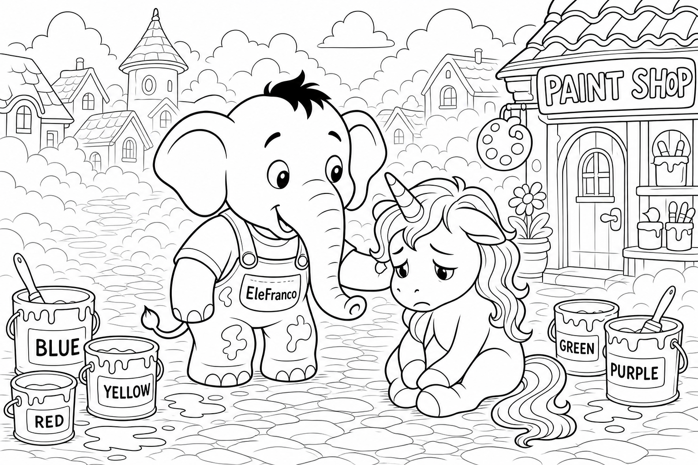
C'era una volta un Elefante di nome Franco, che gli amici chiamavano ... EleFranco. Di cognome faceva Franchini. Abitava nella sua casa a FrancaVilla, una graziosa cittadina circondata da canali e ponticelli fioriti, dove l'aria profumava di lavanda e i mulini a vento giravano dolcemente.
La staccionata del suo giardino era sbiadita: «Andrò subito al colorificio a comprare della vernice celeste per rinfrescarla.» Si infilò le sue scarpe giganti ed uscì. Mentre camminava lungo il sentiero avvolto dalla nebbia di FrancaVilla, la terra risuonava: THUMP THUMP THUMP Vicino a un cespuglio incontra Morno l'Unicorno con le orecchie abbassate: a causa dell'umidità il suo manto magico si era inzuppato e opacizzato e il corno non emetteva più la sua luce dorata, facendolo sentire triste ed invisibile. EleFranco pensò a quanti pennelli comprare e a quale sfumatura scegliere.
Si stava perdendo in questi dettagli, ma vedendo una lacrima scendere sul muso di Morno, scosse la testa e gridò: "FOCUS!" Asciugò il manto dell'unicorno con la proboscide; lo sfregamento però generò energia statica che attirò tutta la nebbia addosso a EleFranco, riempiendolo di goccioline e facendolo starnutire! Ma continuò finché il pelo di Morno non fu asciutto. All'improvviso il corno di Morno si riaccese lanciando un potente raggio arcobaleno che colpì direttamente la staccionata di casa sua, colorandola di un celeste magico e lucente senza bisogno di comprare alcuna vernice! Tutto si era risolto splendidamente, l'elefante alzò la proboscide e fece la sua risata: OH... OH... OH...
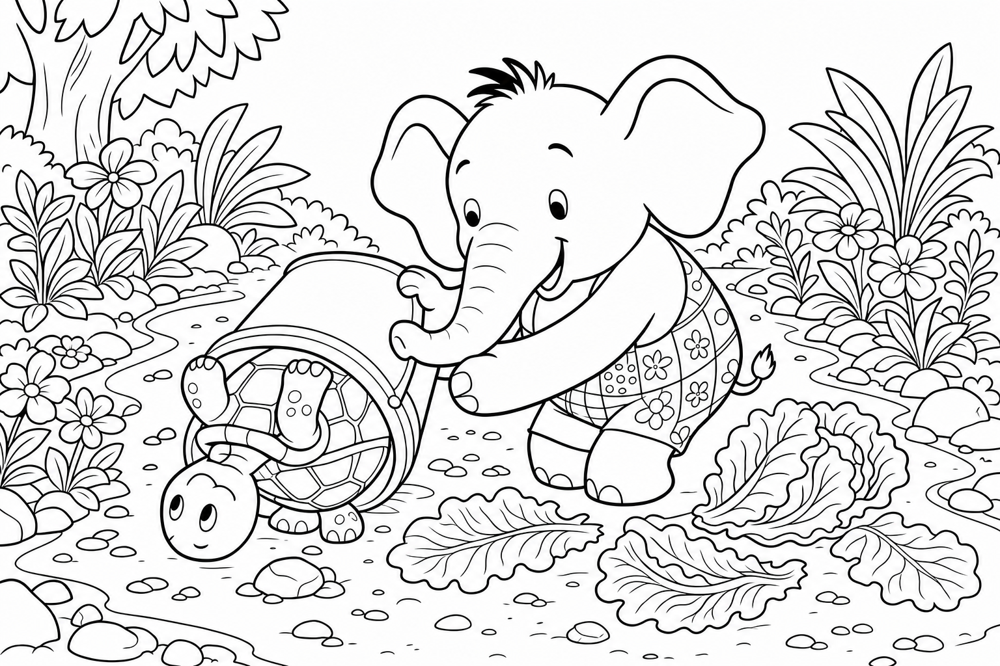
C'era una volta un Elefante di nome Franco, che gli amici chiamavano ... EleFranco. Di cognome faceva Franchini. Abitava nella sua accogliente casa all'interno del paesino di FrancaVilla, un borgo da fiaba adagiato in una radura fiorita dove le stradine erano fatte di sassolini rosa e le siepi di mirtillo crescevano così ordinate da sembrare disegnate con il righello.
Quella mattina il suo stomaco reclamava qualcosa di verde: «Andrò subito dal fruttivendolo Pino a prendere un cespo di lattuga romana gigante per il pranzo» decise. Si infilò i suoi stivali giganti di gomma verde brillante, aprì la porta di casa e si mise in marcia. Mentre avanzava sul sentiero, la terra risuonava dolcemente: THUMP THUMP THUMP Fu a metà del cammino, vicino a un cespuglio di ortiche, che notò qualcosa di strano. C'era un vecchio secchiello di plastica colorato capovolto, e da sotto spuntavano quattro zampette che scalciavano freneticamente a vuoto.
Avvicinandosi, sentì una vocina soffocata: «Aiuto! Qualcuno tolga questo guscio finto dal mio guscio vero!» Era Lattuga la Tartaruga, che camminando distratta si era infilata dentro il secchiello abbandonato e ora il suo carapace era completamente incastrato. Non riusciva né ad andare avanti né a girarsi.
EleFranco si fermò ad osservarla. Iniziò a pensare a quante foglie avesse la lattuga da comprare, se condirla con un pizzico di sale o con due gocce di limone e a quanto fosse croccante il torsolo. Si stava proprio perdendo in questi pensieri culinari, ma un piccolo pianto di Lattuga lo riscosse dal torpore. Scosse le grandi orecchie e gridò forte: "FOCUS!" Si inginocchiò di fianco alla tartaruga.
Allungò la proboscide e provò ad afferrare il secchiello per sfilarlo, ma la plastica faceva attrito sul carapace ruvido e non si muoveva di un millimetro. Lattuga gridava per il solletico e per la paura. EleFranco allora capì che serviva una strategia diversa: doveva fare leva. Posizionò con estrema cura la punta della sua zampa anteriore gigante contro il bordo del secchiello, calcolando la forza per non schiacciare la piccola amica.
Spingendo millimetro dopo millimetro, tese i muscoli e fece pressione. All'improvviso... SBLING! La plastica cedette e il secchiello volò via in aria come un proiettile a molla.
But nel secchiello si era accumulata della vecchia acqua piovana mista a terra: lo strato di fango liquido schizzò dritto in faccia a EleFranco, prendendolo in pieno sul ciuffetto di capelli in testa, che si ammosciò completamente coprendogli gli occhi. EleFranco non ci vedeva più nulla, ma Lattuga era finalmente libera e camminava felice sul sentiero. Mentre EleFranco cercava di pulirsi i capelli con la proboscide, il secchiello, che stava ancora volando alto nel cielo di FrancaVilla, andò a sbattere contro il ramo di un grande orto pensile selvatico. L'impatto fu così forte che fece cadere una cassetta dimenticata lassù: la cassetta si rovesciò e un cespo gigantesco di lattuga romana, verde, freschissima e bagnata di rugiada, rotolò giù per la collina fermandosi precisamente contro gli stivali dell'elefante.
La merenda salutare era pronta e Lattuga era salva! EleFranco si ripulì il ciuffo, guardò il suo pranzo regalato e scoppiò nella sua famosa risata: OH... OH... OH...
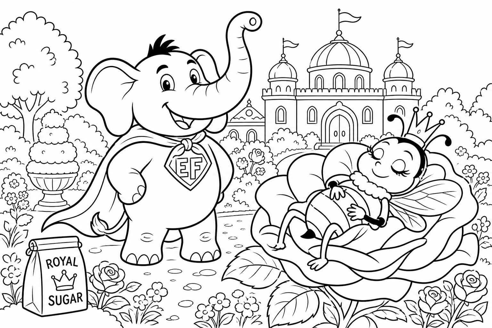
C'era una volta un Elefante di nome Franco, che gli amici chiamavano ... EleFranco. Di cognome faceva Franchini. Abitava nella sua accogliente casa all'interno del paesino di FrancaVilla, una cittadina maestosa dove le piazze erano ornate da grandi statue di pietra e le fontane zampillavano acqua limpida che rinfrescava l'aria profumata di lavanda.
Quel giorno aveva un compito importante: doveva trasportare un pesante sacco di zucchero di canna fino alle grandi cucine del Palazzo Reale. «La torta del Re ha bisogno di questo ingrediente, devo sbrigarmi» pensò. Si infilò i suoi stivali giganti di cuoio lucido per l'occasione elegante, si caricò il sacco sulla spalla e uscì. Camminava fiero lungo il viale alberato che portava alla corte: THUMP THUMP THUMP Arrivato nei pressi della grande cancellata d'oro dei giardini reali, sentì un gemito provenire da una grande rosa scarlatta.
Si sporse e vide Regina l'Ape, la sovrana di tutti gli alveari del regno. Regina era sdraiata sulla schiena, con le coroncina tutta storta e le sei zampette strette intorno alla pancia gonfia. «Oh, EleFranco, che sofferenza!» gemette. «Le mie api operaie mi hanno preparato un vassoio pieno di pappa reale freschissima e io... beh, ne ho mangiata decisamente troppa!
Ho un mal di pancia così forte che non riesco nemmeno a muovere le ali.» EleFranco guardò le finestre del palazzo. Iniziò a pensare a che sapore avesse la glassa della torta reale, se il pasticcere di corte usasse i canditi e a quanti piani fosse alto il dolce del Re. Si stava proprio lasciando distrarre da quei pensieri di zucchero, ma un forte lamento dell'ape lo riportò al dovere.
Scosse le grandi orecchie e gridò: "FOCUS!" Sapeva che per curare l'indigestione non servivano medicine, ma un buon movimento. Fece salire Regina l'Ape sulla punta della sua proboscide e, tenendola ben salda, iniziò a muoverla delicatamente descrivendo dei grandi cerchi nell'aria a ritmo di musica, imitando le montagne russe. *“Su e giù, a destra e a sinistra!”* faceva EleFranco per aiutare lo stomaco dell'ape a lavorare. Continuò per lunghissimi minuti, facendo fare a Regina dei volteggi perfetti. Ma a forza di girare la proboscide in tondo e di respirare il profumo dolciastro e intenso della pappa reale, la testa iniziò a girare vorticosamente... a EleFranco!
L'elefante perse l'equilibrio e iniziò a camminare ondeggiando paurosamente da una parte all'altra della via, proprio come una barchetta in mezzo a un mare in tempesta, rischiando di cadere. A causa di quel buffo ondeggiamento, il grande sacco di zucchero gli scivolò dalla spalla e cadde a terra, rompendosi e rovesciando il contenuto sopra un enorme limone selvatico che era caduto dall'albero del giardino. Regina l'Ape, che grazie ai volteggi sentiva la pancia finalmente sgonfia e leggera, volò giù e vide la scena: «EleFranco, guarda! La natura ci ha dato la soluzione!
Uniamo lo zucchero e il succo di quel limone con l'acqua fresca della fontana del re!» Con la proboscide, EleFranco spremette il limone e mescolò il tutto, creando una fantastica e rinfrescante limonata digestiva che curò all'istante il giramento di testa dell'elefante. Lo zucchero era consegnato e il banchetto era salvo! EleFranco si ripreso, guardò la sua nuova amica e lanciò la sua famosa risata: OH... OH... OH...
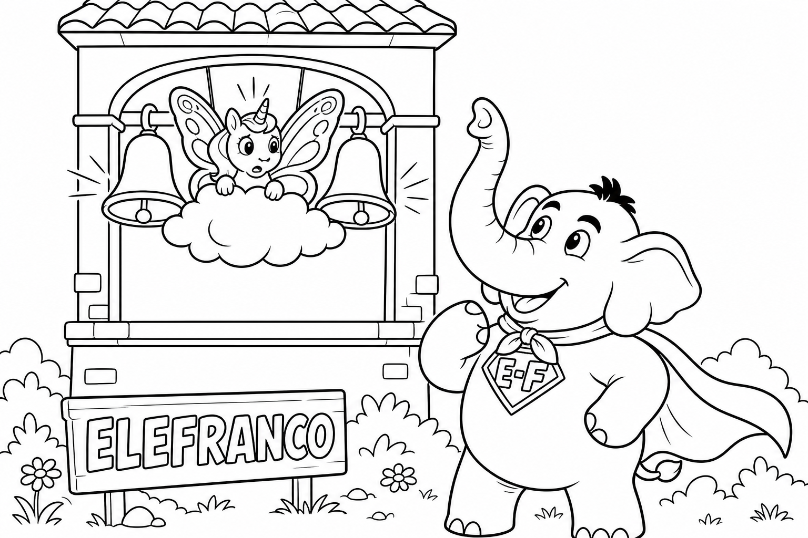
C'era una volta un Elefante di nome Franco, che gli amici chiamavano ... EleFranco. Di cognome faceva Franchini. Abitava nella sua accogliente casa all'interno del paesino di FrancaVilla, una contrada suggestiva costruita ai piedi di una montagna antica, dove le case avevano facciate color pastello e i campanili svettavano alti nel cielo, bucando le nuvole mattutine che sembravano panna montata.
Quella mattina voleva aggiornarsi: «Andrò all'edicola della piazza a comprare il giornale per leggere cosa succede nel mondo» pensò. Si infilò i suoi stivali giganti da passeggio leggeri, aprì la porta di casa e si mise in cammino. Sulla strada i suoi piedoni producevano un suono rassicurante: THUMP THUMP THUMP Arrivato vicino alla vecchia torre del campanile, alzò gli occhi e vide una scena insolita. Lassù, sopra una nuvola soffice rimasta incastrata tra le campane di pietra, c'era Lalla la Farfalla Unicorno, una creatura rarissima con ali di velluto sfumato e un piccolo corno scintillante sulla fronte.
Lalla stava piangendo disperata: era volata fin lassù seguendo un profumo di fiori di montagna, ma guardando in basso si era accorta di quanto fosse alto il campanile e la vertigine l'aveva completamente paralizzata. Aveva troppa paura dell'altezza per spiegare le ali e scendere. EleFranco rimase a guardare la cima della torre. Iniziò a pensare a quante pagine di fumetti ci fossero nel giornale, se ci fossero la pagina dei giochi con i cruciverba e se l'edicolante avesse finito le figurine degli elefanti calciatori.
Si stava lasciando distrarre da questi pensieri di carta, ma un singhiozzo spaventato di Lalla lo riportò al presente. Scosse le grandi orecchie e gridò forte verso l'alto: "FOCUS!" Deciso ad aiutarla, EleFranco iniziò a salire i gradini della ripida scalinata esterna del campanile. Gradino dopo gradino, faticando per la sua stazza, arrivò finalmente sulla terrazza della cima, proprio all'altezza della nuvola. Tese la sua lunga proboscide verso la farfalla come se fosse un ponte sicuro e, per farle passare lo spavento, iniziò a parlarle con dolcezza: «Guarda giù, Lalla, ma non guardare il vuoto!
Guarda le casette di FrancaVilla: da qui sembrano piccolissime, sembrano fatte di Lego colorati! E le macchinine sembrano scarafaggi che corrono!» EleFranco si sporse molto sulla ringhiera di pietra per indicarle un bizzarro tetto rosso. Ma proprio in quel momento, una fortissima folata di vento colpì la cima del campanile, sollevando il cappello di EleFranco e facendolo volare nel vuoto.
L'elefante, preso alla sprovvista, perse l'equilibrio e dovette fare uno sforzo immenso con i muscoli delle zampe posteriori, dondolandosi sulla ringhiera stretta per non cadere di sotto. Era in serio pericolo! Lalla la Farfalla Unicorno, vedendo il suo grande salvatore sul punto di cadere, provò una scarica di coraggio che le fece dimenticare ogni vertigine. Spiegò le ali colorate, si tuffò dalla nuvola e scese in una picchiata velocissima nel vuoto, acchiappando il cappello al volo un attimo prima che toccasse terra.
Con un colpo d'ala elegante, risalì leggera verso la cima del campanile e posò il cappello sulla testa di EleFranco, atterrando poi dolcemente sul suo ciuffo. Nel muovere le ali per frenare, Lalla lasciò cadere una scia di polline d'oro magico: il polline illuminò una fessura della pietra dove si era incastrata una copia perfetta e intatta del giornale del mattino, volata via dall'edicola il giorno prima per via del vento! La missione era compiuta direttamente in cima alla torre. La farfalla non aveva più paura del vuoto ed EleFranco aveva il suo giornale.
Felice, l'elefante si mise comodo e lanciò la sua risata: OH... OH... OH...
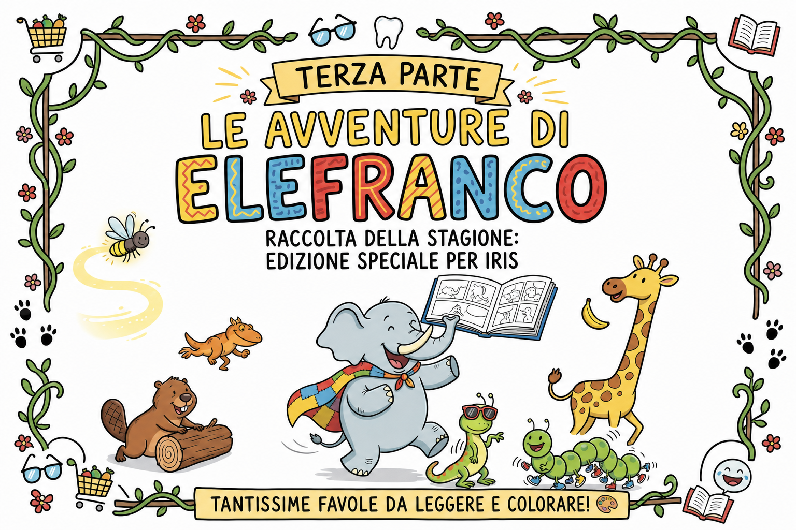
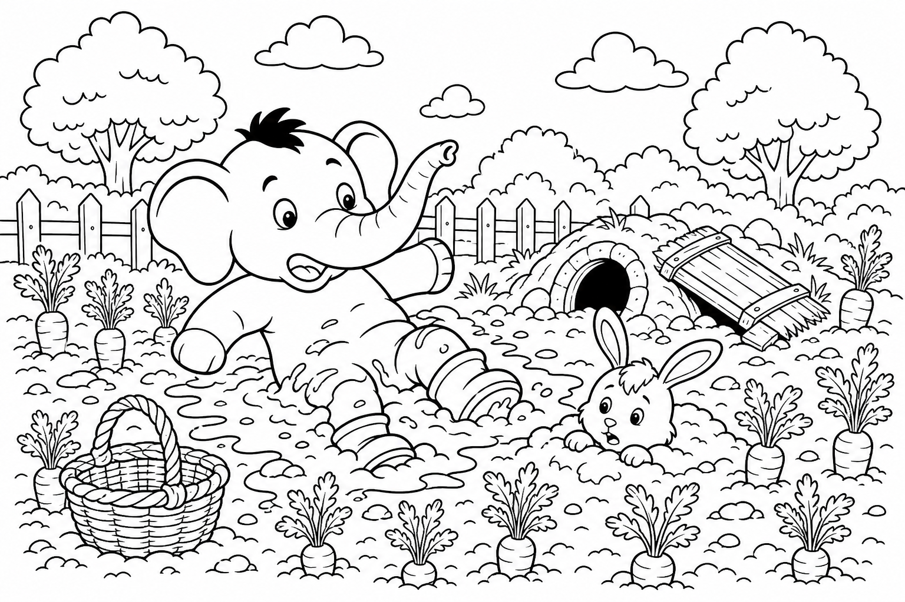
C'era una volta un Elefante di nome Franco, che gli amici chiamavano ... EleFranco. Di cognome faceva Franchini. Abitava nella sua accogliente casa nel paesino di FrancaVilla, un borgo agricolo circondato da campi a scacchiera, dove i filari di ortaggi profumavano di terra bagnata al mattino e i mulini a vento giravano pigri come girasoli giganti che salutano il sole.
Era una mattina fresca di primavera e EleFranco aveva un desiderio chiarissimo in testa: «Oggi cucinerò la mia zuppa preferita! Mi servono carote croccanti e sedano profumato dal mercato agricolo.» Controllò la dispensa, trovò solo una cipolla solitaria e sospirò. «Bene, andiamo a fare la spesa!»
Si infilò i suoi stivali giganti di gomma verde, perfetti per i campi fangosi, prese il suo cestino intrecciato più grande e uscì di casa. Mentre percorreva la strada bianca che costeggiava i campi, la terra tremava dolcemente: THUMP THUMP THUMP Arrivato vicino al campo dei cavoli di Gino il Contadino, sentì un piccolo singhiozzo che usciva da una specie di collina di fango. Si chinò e vide due orecchie grigie che spuntavano come due piccole bandierine affondate. «Aiuto!
Aiuto!» piagnucolava una vocina. «Sono Otto! Otto il Coniglietto! La mia tana!
La mia povera tana!» EleFranco posò il cestino e si avvicinò. Otto era un coniglietto dal pelo morbidissimo, con un piccolo ciuffo bianco sulla fronte che gli dava sempre un'aria un po' sorpresa. Di solito saltellava felice tra i filari; quella mattina, invece, era bloccato fuori dalla propria casa.
«Raccontami tutto, piccolo Otto,» disse EleFranco con voce calda come una coperta al sole. Otto si asciugò una lacrima con la zampa. «Stanotte ha piovuto tantissimo! Tu non lo senti, perché hai un tetto grande.
Io sento ogni goccia! All'inizio era solo un piccolo ruscello, poi il terreno si è ammorbidito e — CRAC! — l'ingresso della mia tana è crollato! Ora c'è un muro di fango compatto. Dentro ho le mie copertine di lana, i miei libri di favole miniature e il barattolo dei semi di carota che stavo conservando per l'inverno.
Non posso entrare!» EleFranco guardò la collina di fango. Poi guardò il cestino vuoto. Poi guardò di nuovo la collina.
Cominciò a immaginare quante carote avrebbe trovato al mercato, se le avrebbe tagliate a rondelle o a bastoncini, e se nella zuppa ci metterebbe anche un po' di prezzemolo. Stava quasi per perdersi nei suoi pensieri quando Otto gridò: «EleFranco, ho freddo! Ho freddo e ho paura che piova di nuovo!» Allora l'elefante scosse le grandi orecchie e gridò la sua parola magica: "FOCUS!"«Non ti preoccupare, Otto.
Insieme sistemeremo la tua casetta.» Si inginocchiò con cautela, appoggiò le zampe anteriori ai lati del crollo e iniziò a scavare con la proboscide. Era bravo a muovere la terra: l'aveva già fatto per Fred il Castoro, per Pino il Topolino e per tanti altri amici di FrancaVilla. Sollevava zolle intere, le posava con cura da un lato, e il buco cominciava ad allargarsi.
«Bravo! Bravo!» esultava Otto, saltellando intorno. «Vedo già un po' di buio! Vedo la mia porticina!»
Ma EleFranco, entusiasta del progresso, non si accorgeva di quanto stesse scavando in profondità. Con un ultimo colpo deciso della proboscide, la terra sottostante cedette tutta insieme. «Ops!» fece EleFranco. Una valanga morbida di fango e terra coprì Otto fino alle orecchie, gli riempì le zampette e gli lasciò solo il naso all'aria.
Il sentiero verso il mercato sparì sotto una collina improvvisa. E EleFranco, preso alla sprovvista, affondò fino alle ginocchia nel fango fresco, con lo stesso cestino impigliato tra due zolle. Otto sputacchiava fango. «EleFranco!
Ora siamo entrambi in difficoltà! E il mercato chiude a mezzogiorno!» EleFranco sentì il brontolio dello stomaco. La zuppa sembrava lontana, la tana sembrava peggio di prima, e lui era un elefante impantanato con un coniglietto che somigliava a un pupazzo di fango.
Ma non si arrese. «Otto, respira piano. Conta fino a tre. Uno... due... tre.
Adesso tira fuori le zampette, io ti aiuto.» Con delicatezza, tirò fuori Otto dal fango come se fosse un fiore di campo. Poi, invece di scavare ancora a caso, si mise ad ascoltare. Sotto la terra gorgogliava qualcosa.
«Senti?» disse. «C'è dell'acqua che cerca una strada.» Scavò più lentamente, questa volta, spostando la terra a piccoli morsi. La proboscide colpì qualcosa di duro e rotondo: un antico tubo di terracotta, incrinato e intasato di radici e fango, che attraversava il campo come un serpente addormentato.
«Ecco il colpevole!» esclamò EleFranco. «Questo tubo portava l'acqua piovana nel fosso del borgo. Si è intasato, l'acqua ha ammorbidito tutto e la tua tana ha ceduto!» Otto batté le zampette, spargendo fango.
«Allora dobbiamo ripararlo!» EleFranco annuì. Liberò il tubo con la proboscide, rimuovendo radici e sassi. Poi, con un soffio controllato — quello che aveva imparato aiutando Ralph la Talpa — mandò un getto d'aria che spazzò via l'ultimo intasamento.
L'acqua trovò finalmente la strada giusta e scorresse gorgogliando nel fosso lontano, lontano dal campo dei cavoli. «Funziona! Funziona!» gridò Otto, danzando. EleFranco rimodellò l'ingresso della tana con zolle compatte e solide, facendo attenzione a non scavare troppo.
Creò una piccola grondaia di terra che deviava la pioggia futura verso il tubo. Otto entrò saltellando, uscì con le copertine di lana al sicuro, abbracciò la proboscide e sussurrò: «Grazie, EleFranco. Ora la mia casa ha radici più forti di prima.» Proprio in quel momento, Gino il Contadino arrivò correndo con le gote rosse.
«EleFranco! Otto! Che casino meraviglioso avete sistemato! Il mio campo era allagato da giorni — guardate le carote adesso!»
Dal terreno liberato spuntavano carote arancioni enormi, lucide di rugiada, e ciuffi di sedano verde brillante. Gino riempì il cestino di EleFranco fino all'orlo. «Per te, amico mio. Zuppa, minestrone e insalata per una settimana intera!»
EleFranco guardò il cestino traboccante, poi la tana riparata, poi Otto che mangiucchiava felice un foglio di sedano. La missione era compiuta senza nemmeno arrivare al mercato! Si staccò dal fango con un suono comicissimo, alzò la proboscide al cielo azzurro e scoppiò nella sua famosa risata: OH... OH... OH...
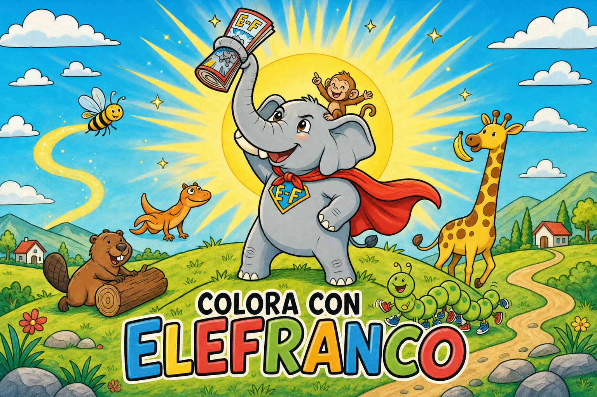
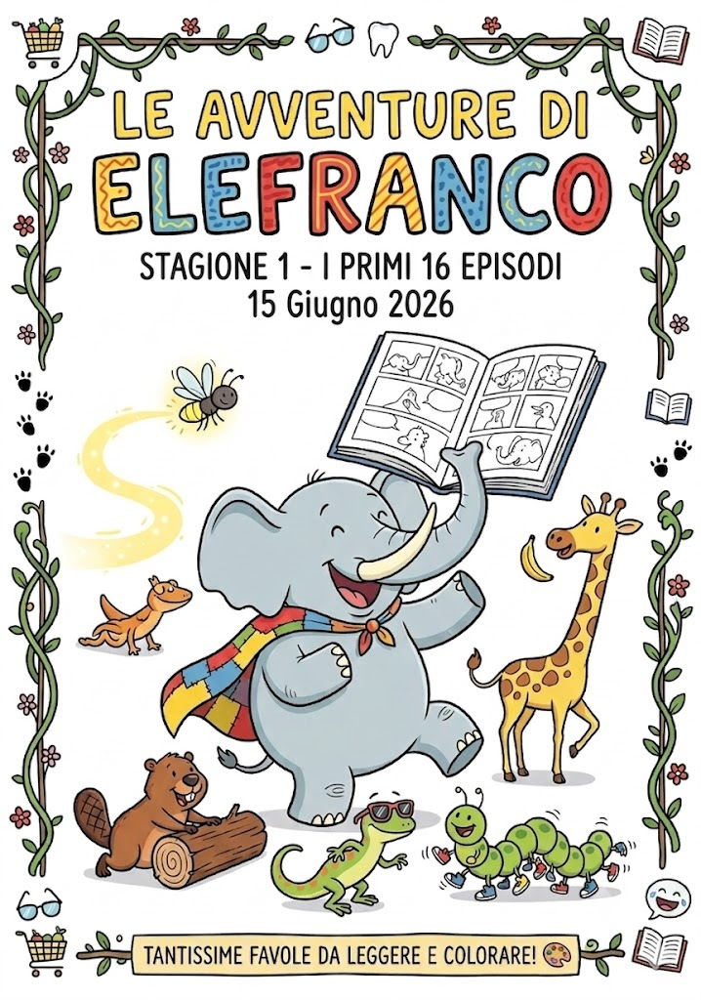
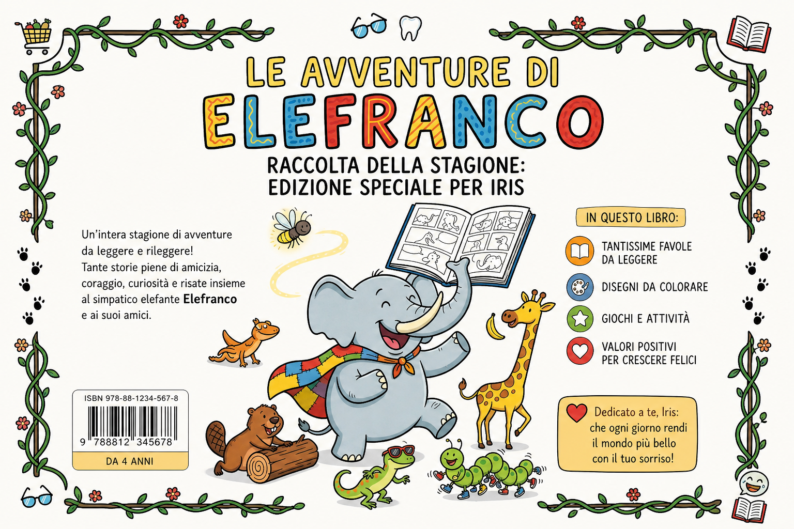